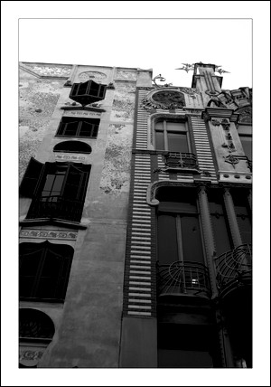

Ambos edificios modernistas
Can Forteza Rei y l`Àguila
Estos dos edificios modernistas, construidos uno junto al otro, son los edificios de “Can Forteza Rei” y “l’Aguila”, el primero construidos en 1912 y el segundo en 1908. La cerámica que podemos observar en sus fachadas procesa de la fábrica mallorquina de La Roqueta, muy famosa en su tiempo.